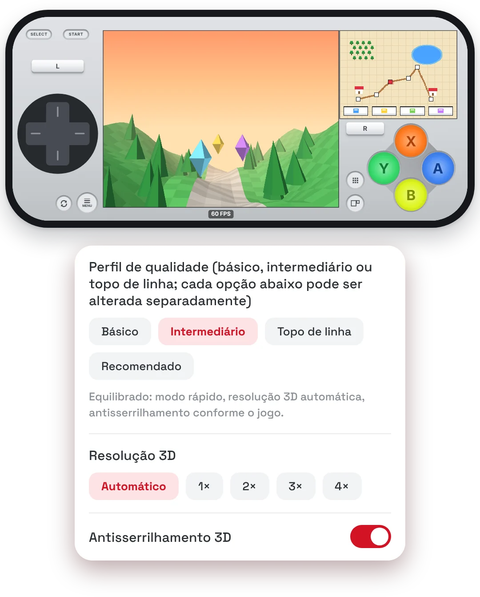
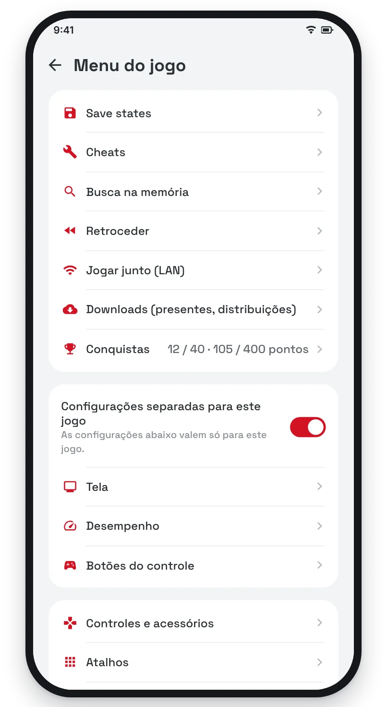
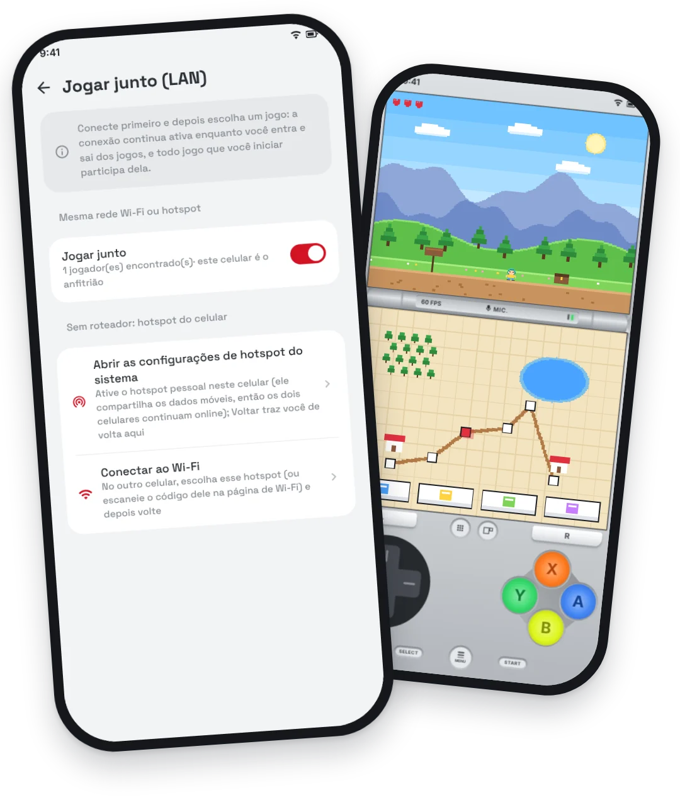
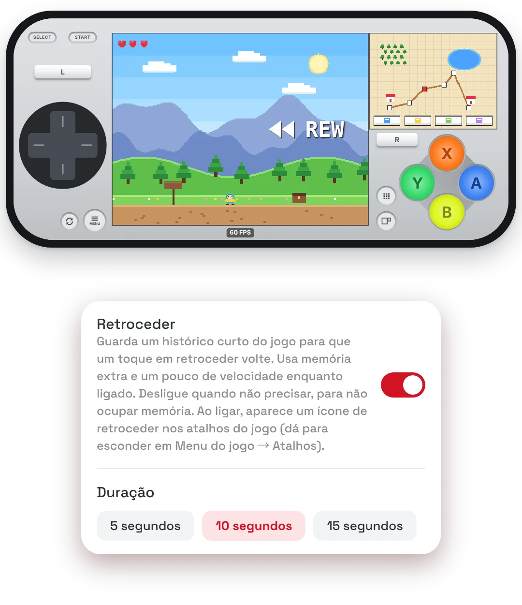

Emulador de NDS com núcleo próprio e preciso: 3D em HD, jogo local, trapaças

Ícones e títulos lidos de cada jogo. Continue de onde parou.

CarloDS é um emulador de NDS para smartphones e tablets Android. Seu núcleo de emulação – processadores ARM9 e ARM7, gráficos 2D e 3D, áudio, conexão sem fio e BIOS integrada – foi desenvolvido integralmente pela equipe e calibrado com base em diversos testes no console original. A maioria dos jogos funciona sem arquivos de BIOS; o formato ZIP é compatível.
Empilhadas, grande + pequena, lado a lado ou uma tela.

Básico, intermediário ou avançado num toque. 3D até 4×.

Estados salvos, trapaças, voltar no tempo, sem fio, downloads, conquistas.

Sem roteador? O ponto de acesso do celular resolve.

Procure valores numa janela flutuante enquanto joga.

Um toque volta 5, 10 ou 15 segundos.
